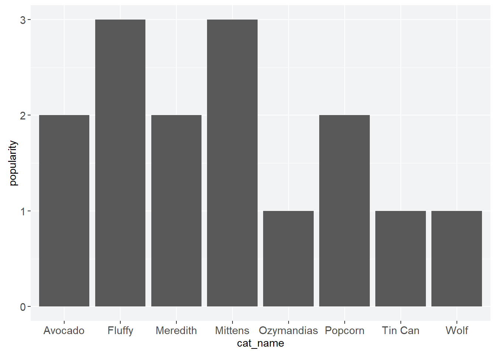

b5 <- read_tsv("b5.tsv",
show_col_types = FALSE)
go_away <- c("race", "age", "engnat", "gender", "hand", "source")
b5c <- b5 |> select(-any_of(go_away))animint2 GSOC Examination
Introduction
Hello! If you’re reading this, you’re probably Toby Dylan Hocking, Faizan Khan, or someone else who’s applying to GSOC 2023. (And if you’re in the latter group, best of luck!)
Why am I applying to work on animint2? In my field of expertise—network psychometrics—an interactive model of depression led to the discovery of hysteresis in symptom networks. Later on, this became a crucial component of network theory.1 So I’ve become an enthusiast for interactive models and visualizations in science.
1 D. Borsboom. A network theory of mental disorders. World Psychiatry. 2017.
If I’m lucky, I hope to spend my summer improving animint2. I’m especially interested in writing and editing documentation. But I’m comfortable doing whatever has priority.
Of course, my super top secret reason for doing this is so I can maybe eventually publish a paper with Toby and bump my Erdős number down to a 4. But shhhh. That’s just between you and me.
Here’s my repository. And here’s my .qmd file, if you’d prefer to look at that or knit it yourself. Note that there may be slight aesthetic differences between your rendered HTML file and this website. Some small portion of how the website looks simply could not be effected through the .qmd. So I made changes by directly altering the HTML and CSS.
Lastly, there’s been an explosion of AI tools this year. I hereby certify that I haven’t used them for any of my writing or code. In fact, I haven’t used them at all.
All right. Onto the tests.
Easy Test: Personalities By Country
The easy test asks us to do an exercise from the animint2 Manual. Or,
Even better: use animint2 to visualize some data from your domain of expertise.
So let’s take a look at some psychometrics.
Data Wrangling
Many psychological datasets have strict rules regarding their use. Luckily, The Open-Source Psychometrics Project has graced us with an abundance of personality data. I’ve elected to use the Big Five dataset. The dataset has data on participants’ age, race, and gender (among other things). But for the purposes of this test, I’ll limit myself to item responses by country and drop the other data:
The Big Five is otherwise known as the five-factor model of personality.
How many countries are there in this dataset, anyway? And what about the number of responses per country?
"(nu" is equivalent to NA.num_country <- b5c |> count(country, sort = TRUE) |>
filter(!(country == "(nu"))
num_country# A tibble: 157 × 2
country n
<chr> <int>
1 US 8753
2 GB 1531
3 IN 1463
4 AU 974
5 CA 924
6 PH 649
7 IT 277
8 MY 247
9 PK 222
10 DE 191
# … with 147 more rowsThat’s a lot of countries, and most of them have very few responses. Generalizability is affected if n is too small, so I’m going to somewhat arbitrarily keep the six countries with the largest sample sizes and drop the rest. Sorry, Italy.
six_countries <- b5c |> filter(country %in% c("US", "GB", "IN", "AU", "CA", "PH"))Lastly, the individual item responses aren’t especially useful to me. So I’m going to generate sumscores for each of the five personality factors and use that instead for the interactive visualization.
Individual items are useful for estimating psychometric networks. But as far as I can tell,
animint2 doesn’t support them.# add id column
plus_id <- rowid_to_column(six_countries, "id") |> rowwise(id)
# generate columns of sumscores
plus_sumscores <- plus_id |>
mutate(extraversion = sum(across(starts_with("E"))),
neuroticism = sum(across(starts_with("N"))),
agreeableness = sum(across(starts_with("A"))),
conscientiousness = sum(across(starts_with("C", ignore.case = FALSE))),
openness = sum(across(starts_with("O"))),
)
# remove individual items
sumscores <- plus_sumscores |>
select(id, country, extraversion:openness)And now we have our final dataset:
sumscores# A tibble: 14,294 × 7
# Rowwise: id
id country extraversion neuroticism agreeableness conscientiousn…¹ openn…²
<int> <chr> <dbl> <dbl> <dbl> <dbl> <dbl>
1 1 US 32 19 32 31 31
2 2 US 28 29 31 28 26
3 3 US 26 32 40 26 22
4 4 US 28 32 34 37 35
5 5 US 32 25 37 30 29
6 6 IN 35 19 31 30 30
7 7 US 31 37 33 35 37
8 8 US 29 33 27 32 33
9 9 IN 32 28 37 34 34
10 10 US 30 29 32 33 31
# … with 14,284 more rows, and abbreviated variable names ¹conscientiousness,
# ²opennessBig Five Data Viz
Now that our data are cleaned, let’s explore.
| Code | Country |
|---|---|
| AU | Australia |
| CA | Canada |
| GB | United Kingdom |
| IN | India |
| PH | Philippines |
| US | United States |
We have five personality traits and six countries. How do personality traits vary by country?
# limit redundancy
violinize <- list(geom_violin(
draw_quantiles = c(0.25, 0.5, 0.75)),
coord_flip(),
labs(x = NULL))oc <- sumscores |>
ggplot(mapping = aes(x = country,
y = openness))
oc + violinize
cc <- sumscores |>
ggplot(mapping = aes(x = country,
y = conscientiousness))
cc + violinize
ec <- sumscores |>
ggplot(mapping = aes(x = country,
y = extraversion))
ec + violinize
ac <- sumscores |>
ggplot(mapping = aes(x = country,
y = agreeableness))
ac + violinize
nc <- sumscores |>
ggplot(mapping = aes(x = country,
y = neuroticism))
nc + violinize
There’s some limited differences between personality factors. The distribution of scores for neuroticism is unusually wide, and openness seems to be slightly higher than the other personality factors. I’m not sure why. Maybe it’s an artifact of the kinds of people attracted to the website. Personality science isn’t my specialty in psychology—I can only speculate.
It’s also impressive how similar the scores are between countries. Their median scores do not seriously differ.
Here’s another look at at the similarities between test scores: a density plot for agreeableness. In this plot, we can see the literal overlap between the distribution of test scores. I’ll come back to the inter-country overlap later.
Agreeableness refers to phenomena like the tendency for compliance and altruism.
a_density <- sumscores |>
ggplot(mapping = aes(x = agreeableness,
color = country,
fill = country)) +
geom_density(alpha = 0.1)
a_density
Interacting with Personality
All right. Time for the most relevant part of the test: using animint() to showcase my data.
The factors in the five-factor model of personality are meant to be mostly independent from one another.2 That partly means we don’t expect the factors, when plotted against one another, to have any particularly strong relationships. In contrast, if we obtain a Pearson’s r close to 1 or −1, it may be the case that the two factors are actually one.
2 There are empirical and theoretical reasons to question this, but that’s outside the scope of the test. For further reading, see:
- D. Borsboom. The attack of the psychometricians. Psychometrika. 2006.
- D. van der Linden et al. The general factor of personality. J. Res. Pers. 2010.
What do the data show?
correlations <- sumscores |>
ggplot(mapping = aes(x = conscientiousness,
y = extraversion,
color = country))
corr <- correlations + geom_jitter(alpha = 0.25)
ani_corr <- animint(corr)
ani_corr$first <- list(country = "US")
ani_corrmapping: x = conscientiousness, y = extraversion, colour = country, showSelectedlegendcolour = country
geom_point: na.rm = FALSE
stat_identity: na.rm = FALSE
position_jitter Warning in f(...): showSelected only works with position=identity, problem:
geom1_point_corr
Here, extraversion is plotted against conscientiousness. The United States is the only country currently plotted. Clicking on other countries plots their data and shows that aforementioned overlap between countries. I’ve also made the data points semi-transparent so the data density is visible.
Extraversion refers to phenomena like outgoingness, while conscientiousness refers to phenomena like diligence.
I haven’t bothered to do any statistics. But at first glance, it seems like these data are consistent with the five-factor model. Outliers distort our hypothetical regression line and render \(r > 0\), but if we zoom in where the data are most dense, perhaps even that fluke of a pattern will fade.
Let’s see if that’s true.
corr_densed <- corr +
xlim(20, 40) +
ylim(20, 40)
ani_corr_zoom <- animint(corr_densed)
ani_corr_zoom$first <- list(country = "PH")
ani_corr_zoommapping: x = conscientiousness, y = extraversion, colour = country, showSelectedlegendcolour = country
geom_point: na.rm = FALSE
stat_identity: na.rm = FALSE
position_jitter Warning in f(...): showSelected only works with position=identity, problem:
geom1_point_corrdensed
This time I’ve opted to show the Philippines, the country with the sparsest data. The data do seem to be pretty patternless. Furthermore, as you add more countries—or just the United States—the discrete nature of the data becomes visible even with jittered points. (The sumscores can only be integers.)
And, of course, it’s immediately obvious without jitter. Last interactive scatterplot of the easy test:
corr_discrete <- correlations +
geom_point(alpha = 0.25) +
xlim(20, 40) +
ylim(20, 40)
animint(corr_discrete)
Pretty cool! Being able to explore and present this kind of research would be harder without the interactive benefits of animint2.
Sibling Rivalry
The second part of the easy test asks me to
Show an example of an error that you see when animint2 is loaded/attached at the same time as standard ggplot2.
There’s no conflict with just loading the packages:
library(animint2)
library(ggplot2)But R throws up an error message when you run code that uses that syntax. As a quick example, I’ll load up a toy dataset and try to generate a bar chart.
cat_pop <- read_csv("meow.csv",
show_col_types = FALSE)
cat_bar <- ggplot(data = cat_pop,
mapping = aes(cat_name, popularity)) +
geom_bar(stat = "identity", color = purple)
cat_barWhat happens?
Warning: Incompatible methods ("+.gganimint", "+.gg") for "+"In other words, animint2 and ggplot2 don’t get along because their syntaxes overlap. Unloading or uninstalling one or the other gets rid of the problem and finally gives us our very important kitty bar chart.

Appendix: Observations
Here are some things that I noticed while reading the documentation and playing around with the package. Since I’m new to animint2, I make no claim that my observations are novel, noteworthy, or even correct. But I think they’re still useful. My guess is that many users of animint2 are also “new” to it, in the sense that they’re working scientists whose goal is to generate an interactive graphic and then to stop thinking about the package. Maybe some of my (possibly mistaken) observations overlap with theirs’.
Thoughts
I know that animint2 is a fork of ggplot2, not an extension. But the family resemblance between animint2 and ggplot2 is sometimes confusing. For a short while, I admit that I treated the former as if it were an extension of the latter. I tried to use geom_col() and then geom_boxplot() before checking the reference manual and realizing they were not part of animint2. I also foolishly tried to use packages that depend on ggplot2. Since I had animint2 loaded instead, that obviously didn’t work.
ggplot2 documentation is available as a website, but animint2 documentation is only available as a PDF. Of course, there’s the valuable animint2 Manual. But that’s more like a book than a reference site—something like a counterpart to the ggplot2 book. Since the ggplot2 reference was a lot more accessible, I found myself using their reference and only going back to the animint2 reference when necessary.
Grumpy aside: why is the R documentation default a PDF? It’s the same with , but at least there’s an obvious technical reason for that.
I’m not sure if I’ll have enough time, and I’m not sure it’s what you mean when you wrote that animint2 will “have even more… documentation.” But as part of that documentation boost, I’d like to generate a reference site for the unique features of animint2. I think that’d make the package more accessible to animint2’s users.
Possible Bugs?
Here’s a list of animint2’s unexpected behaviors. My mistaken observations are probably most concentrated here. It’s possible that the unexpected behavior is not the fault of animint2, but instead the fault of another package or user error. Honestly? Probably user error.
Chapter 7 of the
animint2Manual is buggy and scrolls up by itself. The effect begins happening around this sentence: “Note how we usedgeom_segmentinstead ofgeom_bar, but their appearance is similar.”It’s difficult to lay out multiple plots in a grid, or on a line. Quarto will not knit them properly. My workaround is to have a codeblock for each graph. There’s an open issue about it for
animint, but not foranimint2. So I’m not sure if it’s still a problem, or if I messed up somehow.When I tried to make an interactive density plot, I was warned that “
showSelecteddoes not work withStatDensity.” Items in the legend are selectable, but selecting one removes the density plot currently on screen. The end result is that only one plot shows at a time. I haven’t been able to find documentation about this anywhere.When I make interactive scatterplots, I’m warned that “
showSelectedonly works withposition=identity, problem: geom1_point_foobar.” This is confusing, since:- It’s already the case that
position = identity, since it’s the default forgeom_point()andgeom_jitter(). - The problem it points out is the
.tsvfile thatanimint()generates. - It correctly renders the scatterplot.
- It’s already the case that
When I make violin plots, I’m warned that the graph is “collapsing to unique ‘x’ values.” This has been fixed in
ggplot2but not inanimint2, possibly since the fix happened after the fork.When I try to place a static
animint2graph in the margins, I can’t place a caption, or else the graph doesn’t render correctly.column: marginandfig-capdon’t work well together.
Technically not about
animint2 itself, but it’s animint2 adjacent.I’m least certain about this observation.Appendix: My Mistakes
Major mistakes I made while doing these tests and then subsequently caught. This excludes mistakes re: the number of brackets, the placement of a function, or spelling.
Easy Test
My sumscores were erroneous, but it took me an embarrassingly long time to notice and check. I first noticed that the openness sumscores were impossibly high—each sumscore has a ceiling of 50, which openness sumscores exceeded. Manually adding up the scores myself showed that extraversion had errors, too. I believe my mistake was using c_across() and then messing up the selection syntax, but I didn’t really have the time to experiment and check.